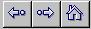

Exercice 3a
Dans le coin gauche supérieur de la fenêtre de Netscape ou Explorer, il y a deux flèches:

Celle de gauche permet de retourner au texte précédent, à l'endroit précis où vous avez cliqué sur l'item coloré (les flèches peuvent également être accompagnées des mots <avant>, <arrière> ou back et forward).
Cliquer maintenant sur le bouton de retour du fureteur (permettant de retourner au texte précédent) et poursuivre.